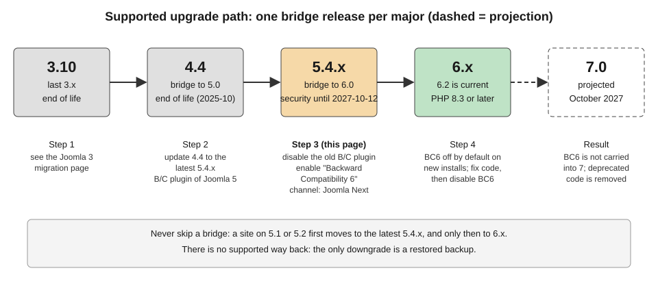

Comparison and Decision Guide
|
This content was generated with the assistance of AI and should be verified against the official documentation before being relied on in production. |
Joomla offers several ways to do almost everything, and most of the early decisions of a project are a choice between two or three of them. This page gives a table and a rule of thumb for each such choice, then says when Joomla is the wrong tool altogether. It was checked on 2026-10-30 against Joomla 6.2.x (6.2.0 was released on 2026-10-13) and PHP 8.3 or later. The 5.x series is in its security-only period: 5.4.10 was the last bugfix release and security fixes continue until 2027-10-12. Joomla 4.x reached end of life in October 2025, and 3.x before it, so this page does not recommend starting a new site on any version older than 6.
The running example is the Tallpine Hiking Club, a fictitious mountain club with trail reports, news, a board, partner banners, an English and German site and a member-only trail-conditions area. Each section ends with the choice the club makes. For cross-CMS metrics (market share, security record, talent pool, cost) see the CMS Comparison, which is not repeated here. The decisions below are about choices inside Joomla.
Core features versus extensions
Joomla core already contains a large part of what a content site needs: articles, categories, tags, custom fields, menus, contacts, banners, news feeds, Smart Search, multilingual associations, redirects, workflows, scheduled tasks, mail templates, multi-factor authentication, privacy tools and action logs, and the Web Services API. What it does not contain is a backup tool, a multisite feature, a shop, a forum or a visual page builder; these come from third-party extensions that are listed in the Joomla Extensions Directory (see Update Servers and the JED).
| Question | Prefer a core feature when | Prefer an extension when |
|---|---|---|
Does core do it? |
A core component, plugin or option covers the need, even if it takes some configuration |
Core has no equivalent (backup, shop, forum, gallery, event booking) |
Maintenance |
It is updated with Joomla and covered by the Joomla Security Strike Team |
You accept a second update stream and a second vendor |
Compatibility |
It works on every Joomla release that the site runs |
You must check each extension for a new major, and BC6 may hide gaps (see upgrading) |
Exit |
Content stays in core tables |
Data may stay in the extension’s own tables, with a migration cost |
Cost |
Configuration time |
Licence, updates, review and support |
Before adopting an extension, check its Joomla and PHP compatibility in the changelog (not only on the directory page), the date of its last release, whether it ships an update server (so Joomla can tell you when a security release exists), and who maintains it. The checks are described in Extensions: Installing, Updating and Update Sites. Extensions are installed from the administrator, so every extension is also code that runs with full privileges on the server: install only what the site needs.
Rule of thumb. Use core whenever it covers eighty per cent of the need, and extend it with a small extension of your own when it does not. The club uses core for articles, tags, contacts, banners and Smart Search, and a backup extension because core has none (see Backups and Recovery). Shop extensions for Joomla exist, but selling is a different problem; if a shop is the main product, compare dedicated platforms first in the E-commerce comparison.
Articles with custom fields versus a custom component
The club publishes trail reports with a distance, an elevation gain, a difficulty, a GPX file and a season. Two designs fit.
-
Articles with custom fields. Create the fields
distance-km,elevation-gain,difficulty,gpx-fileandseasonincom_fields, assign them to the Trails categories, and let editors fill them in the article form. The values are stored in#__fields_valuesand shown by the Automatic Display setting or by a layout override. See Custom Fields and Categories, Custom Fields and Workflow Integration. -
A custom component. Build
com_tallpinewith atrailentity, its own table, administrator list and edit views, a site router, access control, and optionally its own Web Services API endpoints. See Component MVC: Administrator and Component Site Views and Routing.
| Criterion | Articles and custom fields | Custom component |
|---|---|---|
Build effort |
Hours, no code |
Days or weeks: manifest, MVC, router, SQL, language files, tests |
Gets for free |
Categories, tags, access levels, versioning, workflows, Smart Search, multilingual associations, API endpoints for articles and fields |
Only what you wire in: categories, custom fields and ACL integration are opt-in |
Data model |
One article with a flat set of fields; subforms for repeated groups |
Real tables, foreign keys, indexes, queries tuned to the data |
Queries and reports |
Filtering by field values is limited and slow on large sets |
Any SQL the database supports |
Volume |
Hundreds to a few thousand items |
Tens of thousands of records or heavy joins |
Maintenance |
Joomla updates carry it |
Your code on every Joomla major (see upgrade notes) |
Risk |
Fields are not a schema: renaming or retyping a field affects stored values |
Every line is yours to secure and test |
Rule of thumb. Start with articles and custom fields. Move to a custom component when the data has its own lifecycle,
many records, relations or reporting, or when editors do not think of it as content. The club keeps trail reports as
articles with fields, because editors, tags, workflow and search all expect articles. It builds com_tallpine only for
the trail catalogue, an imported dataset of thousands of segments with closures from a park authority, which does not
belong in the editorial article list. The component can still reuse categories and custom fields, so the choice is not
all or nothing; see The Database API and
Extension Types, Manifests and Packaging.
Child template versus copied template versus framework
Cassiopeia is the default site template. To make the club’s site look different there are four routes.
| Criterion | Child template | Copied template | Template framework or page builder |
|---|---|---|---|
What it is |
A template that names a parent ( |
A full copy of Cassiopeia renamed to a new name |
A third-party template with its own control panel, layout builder and often its own plugins |
Core updates |
The parent is updated by Joomla; your files are kept apart |
You never receive template fixes |
Updated by the vendor, on the vendor’s schedule |
Maintenance |
Smallest: a few overrides, a stylesheet, positions |
Highest: you own every file |
Depends on the vendor’s Joomla 6 support and licence |
Control |
Overrides, |
Total |
Whatever the framework exposes |
Lock-in |
Low: removing the child returns to Cassiopeia |
Low, but drifting |
High: layouts live in the builder’s data |
Best for |
Almost every custom site |
Rarely; a template unrelated to Cassiopeia is better built from scratch |
Teams that want a visual builder and accept the vendor |
Child templates have existed since Joomla 4.1, and Joomla 6.0 ships cassiopeia_extended as a core child template, so
older material that calls them brand new is out of date. A child inherits every file of the parent except the files that
share a name with a file in the child. The user guide states that child template files are not affected by Joomla
updates. See Child Templates and
Cassiopeia and Cassiopeia Extended.
<!-- templates/cassiopeia_tallpine/templateDetails.xml (excerpt) -->
<extension type="template" client="site">
<name>cassiopeia_tallpine</name>
<!-- a child is not itself a parent -->
<inheritable>0</inheritable>
<parent>cassiopeia</parent>
</extension>A template that has nothing in common with Cassiopeia, or that is meant as a teaching example, is better written from scratch than copied; see Building a Template from Scratch. Third-party frameworks and builders such as Helix Ultimate, T4, Gantry 5, SP Page Builder and YOOtheme Pro are presented neutrally in Template Frameworks and Page Builders, with an audit procedure; their Joomla 6 compatibility is a statement by each vendor.
Rule of thumb. Create a child template of Cassiopeia. Copy a template only to freeze a design on purpose. Choose a
framework only for a concrete feature you need and after checking its Joomla 6 support and its exit path. The club uses
cassiopeia_tallpine.
Template override versus layout versus plugin
Three mechanisms change the output of an existing page without editing core files. They differ in what they replace and in where the change lives.
| Criterion | Template override | Layout (or layout override) | Plugin |
|---|---|---|---|
What it changes |
The HTML of one component view, module or plugin output, for one template |
A reusable fragment of markup used by many screens (pagination, an image tag, a field block) |
Behaviour or data: it runs on an event and can change content, add checks or inject output |
Where it lives |
|
|
A plugin extension, usually in the group of the event |
Scope |
Per template |
Everywhere the layout is rendered, in that template |
Site-wide, independent of the template |
Survives a template change |
No |
No |
Yes |
Needs code |
Markup only, some PHP |
Markup only |
PHP, with a manifest and an installer |
Risk |
The core file changes after an update and the override goes stale |
Same |
Runs on every request that triggers the event, so errors and slow code affect the whole site |
An alternative layout is a variation of a view that a menu item or a module can select by name; it is created as an override with a different file name and chosen from the Layout list. See Template Overrides and Alternative Layouts and Layouts and Module Chromes for the search order and the screens. When the work is to change what data appears or to react to something happening, a plugin is the right place; see Plugin Development and Events.
Rule of thumb. If the change is about markup in one template, use an override. If the same fragment appears in many
places, override the layout once. If the change is about behaviour or must survive a template switch, write a plugin.
Prefer an override created from the Templates manager, so the Updated Files tab warns when the core file it copied has
changed. The club overrides the article view and the custom-fields layout in its child template, and keeps the trail
conditions notice in the plugin plg_content_tallpine_conditions, because it must also work if the template changes.
Modules versus plugins versus components
Joomla has four extension types for a developer to choose among (templates, languages and packages are the others), and the first three are easy to confuse.
| Criterion | Component | Module | Plugin |
|---|---|---|---|
Role |
A full application with its own pages, database tables and administrator screens |
A block of output shown in a template position, on selected pages |
Code that listens for an event in the Joomla lifecycle and acts |
Has its own URL |
Yes, through a menu item and the router |
No; it appears inside a page |
No |
Has its own admin screens |
Yes |
A parameter form only |
A parameter form only |
Typical example |
|
|
|
Runs |
When a menu item or URL points to it |
When its position is rendered on the page |
When the event is triggered, on any page |
Use it for |
Data and workflows with pages of their own |
Showing something on many pages |
Cross-cutting behaviour, integration, validation |
A module uses the Dispatcher and Helper design (see Module Development), a plugin
uses a services/provider.php and a class that implements SubscriberInterface with the concrete event classes of Joomla
5 and later, and a component uses the namespaced MVC (see Namespaces, Autoloading and Dependency Injection).
A plugin placed in the wrong group is never loaded for its event, and a component is not needed when a module can show
the same data. The related scheduled and command-line plugin types are covered in
Scheduled Task Plugins and
Console Command Plugins.
Rule of thumb. If the feature needs its own page, build a component. If it is a box on many pages, build a module. If
it reacts to something, build a plugin. A single feature often needs more than one, which is why the club ships all of
them in one package, pkg_tallpine, so they install, update and uninstall together; see
Extension Types, Manifests and Packaging.
Web Services API versus a custom JSON view
Both return JSON to another program. Since Joomla 4.0 every site has a Web Services API application at
/api/index.php/v1, which returns JSON:API documents, authenticates with an API token in the X-Joomla-Token header,
and exposes endpoints for articles, categories, fields, users, menus, modules and more. The Developer Manual page for
Web Services documents the article operations and points to a list of core endpoints.
| Criterion | Web Services API | Custom JSON view in a component or com_ajax |
|---|---|---|
Format |
JSON:API media type, the same for every endpoint |
Whatever you write |
Authentication |
API token or the configured authentication plugins, with the |
Session cookie and CSRF token, or something you build |
Routing |
Registered by a |
A route or a task of your component |
Pagination, filters, errors |
Built in |
You implement them |
Writes |
POST, PATCH, DELETE with ACL checks |
A controller task with your own checks |
Best for |
Headless front ends, scripts, integrations, mobile apps |
A small response used by your own page’s JavaScript, behind the session |
Effort |
Almost none for core content; a plugin and a controller for your own entity |
Low for one response, growing with each endpoint |
On a fresh 6.2 install the API token plugin is enabled and the Basic Auth API plugin is disabled, so generate a token for a dedicated user and keep it on the server side of the front end. Never put a token in browser code. The following request reads the club’s trail reports.
# TALLPINE_API_TOKEN is read from the environment; it is never written into the repository.
curl --silent \
--header "Accept: application/vnd.api+json" \
--header "X-Joomla-Token: ${TALLPINE_API_TOKEN}" \
"https://tallpine.example/api/index.php/v1/content/articles?filter[category]=12&page[limit]=10"Source: Joomla Manual: Web Services
Rule of thumb. Use the Web Services API for anything that another application consumes, and for headless sites. Use a
small custom view or com_ajax call only for a response that the site’s own page needs in the same session. The club’s
"trail map" front end reads the API with a server-side token, and the nexthikes module does its small refresh through
com_ajax.
When to enable Workflows
Workflows add stages and transitions to articles (and to other components that opt in), so that people can only move an item along the steps their permissions allow. They exist since Joomla 4.0, are off by default, and are switched on in the options of the Articles component. Joomla ships one workflow, the Basic Workflow, and the visual workflow editor arrived in Joomla 6.1. See Workflows for the screens and the plugins.
| Situation | Leave workflows off | Enable workflows |
|---|---|---|
Who publishes |
One person, or a small group that trusts each other |
Different people write, check and publish |
Need to show who approved what |
No |
Yes |
Restrict the publish step to a group |
An access level and the Edit State permission are enough |
Only a role with the transition permission may publish |
Bulk import or API writes |
Many items are changed at once, and each transition would be run by hand |
Rarely |
Super Users |
They bypass the workflow anyway |
They still can; the audit trail is the benefit for everyone else |
Cost |
None |
More screens, permissions and states that can get stuck |
Rule of thumb. Enable workflows when a second person must approve before an item is public, and not before. The club keeps the News category without workflows and gives the Trails categories a Draft, Review and Published workflow in which only the Trail Wardens group runs the publish transition. Permissions are in Users, Groups, Access Levels and ACL.
Staying on 5.4 versus upgrading to 6
Joomla ships a major version every two years, in October of odd years, with four minors, one every six months. The fourth minor (x.4) is a bridge release: it adds no features and is the only starting point for the next major. After x.4.0 there is one year of bugfixes and two years of security fixes. For 5.x the bugfix period ended with 5.4.10 on 2026-10-13, and security fixes continue until 2027-10-12. Joomla 6.x was released on 2025-10-14; the developer roadmap gives regular bugfix support for 6.x until 2028-10-17 and security-only support until 2029-10-16.

| Criterion | Stay on 5.4 for now | Upgrade to 6 |
|---|---|---|
Support |
Security fixes only, until 2027-10-12 |
Bugfixes and security fixes |
Requirements |
PHP 8.1 or later, as before |
PHP 8.3 or later; check the database minimums in the Manual and the upgrade guide, which differ for MariaDB and PostgreSQL |
Extensions |
Everything that works today keeps working |
Each extension must be checked; the compatibility plugin Backward Compatibility 6 covers removed legacy classes only for a time |
Effort |
None now, a larger jump later |
A planned project: staging, backup, extension audit |
Risk |
Falling behind: an unsupported site cannot take security fixes |
Removed 6.0 features; a pre-update check that the project describes as not a reliable source of truth |
Best for |
A site whose critical extensions have no 6.x release yet, with a dated plan |
Every site that can move; new sites start on 6 |
An upgrade starts from the latest 5.4.x. Update to it, disable the old backward-compatibility plugin, enable Backward
Compatibility 6 (the two cannot both be on), and switch the update channel to Joomla Next. The Joomla 6.0 removals matter
for custom code: JPATH_PLATFORM is no longer defined without BC6, AdminModel::getItem() returns stdClass, and the
legacy J* aliases such as JFactory and JText are in BC6 only and off by default on new installs. Automated Core
Updates, available since 5.4, are on by default for new installs and off for upgraded sites. For the procedure, the
removals and the recovery path see Upgrading Joomla 5 to 6,
Deprecations and Preparing for Joomla 7 and
Versions, Release Cycle and Support. Sites on 4.x or 3.x first
reach 5.4: see Upgrading Joomla 4 to 5 and
Migrating from Joomla 3.
Rule of thumb. A new site starts on 6.2. An existing 5.4 site should plan the upgrade within its security window rather than wait for its last month, and should not upgrade production before the extension audit and a staging rehearsal. The club’s site runs 6.2 from the start; a partner club site still on 5.4 has until 2027-10-12 and plans for early 2027. Older books such as Developing Extensions for Joomla! 5 (2023) and Joomla! 4 Masterclass (2023) target platforms that are now security-only or end of life, so their code and screens need the corrections listed in Where Older Books and Tutorials Are Outdated.
Decision tree
When Joomla is not the right tool
Joomla pays back its learning curve when a site has structured content, access levels, multiple languages and a long life, and when the team wants a PHP CMS with a built-in administrator and API. It is a poor fit in these cases.
-
A small brochure site with a handful of pages, edited by one person, and no custom data. Hosting, updates and a developer cost more than the site needs. Look at the WordPress or Webflow sub-sections, which also compare their own strengths, and at Drupal when the content model, roles and workflows are more demanding than Joomla’s core offers. The CMS Comparison has the cross-CMS metrics.
-
A complex application where the work is business logic, not content: transactions, dashboards, workflows without editors. Use an application framework; see the PHP and Laravel section. Joomla can still serve the content part of such a system through its Web Services API.
-
A shop as the main product. Joomla shop extensions exist, but compare dedicated platforms first in the E-commerce comparison.
-
Many sites from one codebase. Joomla has no multisite feature in core; options are separate installations or a shared single install with workarounds (see Multi-site Options and Scaling).
-
No technical skills or hosting to apply security releases promptly. Automated Core Updates cover minor, patch and security releases but need a publicly reachable site, the Default update channel and 5.4 or later.
-
A planned AI-centred product. Nothing AI-related ships in core as of 6.2; the roadmap lists MCP servers and an AI framework as plans (see AI, MCP and the Roadmap).
Common mistakes
-
Building a custom component for content that articles with custom fields would handle, and then re-implementing categories, versioning and search.
-
Installing an extension without checking its Joomla 6 compatibility or whether it provides an update server.
-
Copying Cassiopeia instead of creating a child template, and then missing every template fix.
-
Editing a core file instead of using an override, so the next update erases the change.
-
Enabling Workflows for a team of one, then wondering why articles are stuck in a stage.
-
Putting an API token in browser JavaScript for a headless front end.
-
Staying on 5.4 with no dated plan, or upgrading production without a staging rehearsal and a backup.